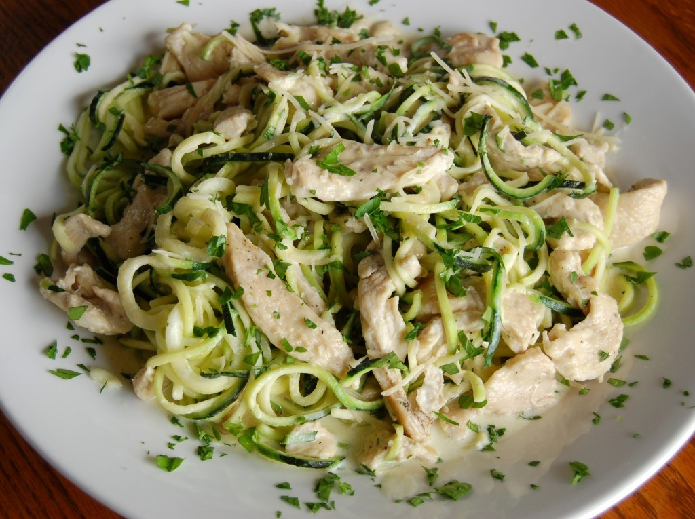

Chicken Alfredo

Description
You will need: Zucchini, chicken, alfredo sauce
- Now we're getting into some gourmet shit. Chop up your zucchini because we staying away from carbohydrate mothafuckers. Or you can spiralize them like you fancy and shit.
- Bake or fry your chicken. If you haven't already, make sure you kill it first. I like to add salt and pepper for that bugs bunny flavor.
- Once the chicken is cooked, pour some of that alfredo sauce on that bitch and lower your heat.
- Throw your zucchinis in and cover it with a lid, then let it cook for about 5 minutes.
- Put that shit onto a plate and eat it while you think about Arnold. That fucker was cumming at home, at work, at the gym, WTF.
Make sure you subscribe to my dick and fuck that notification button for more bitch ass recipes like this one